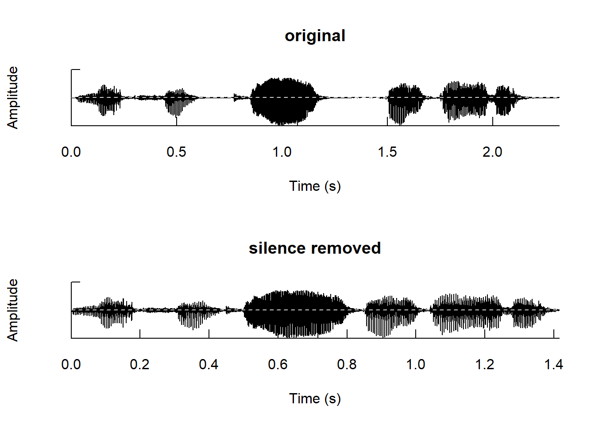
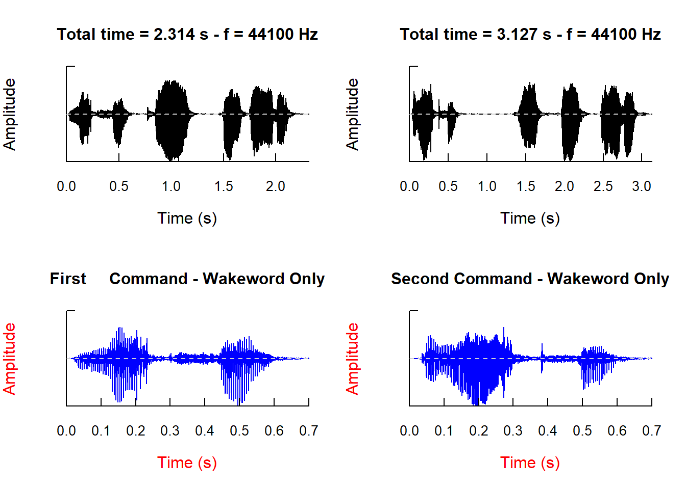
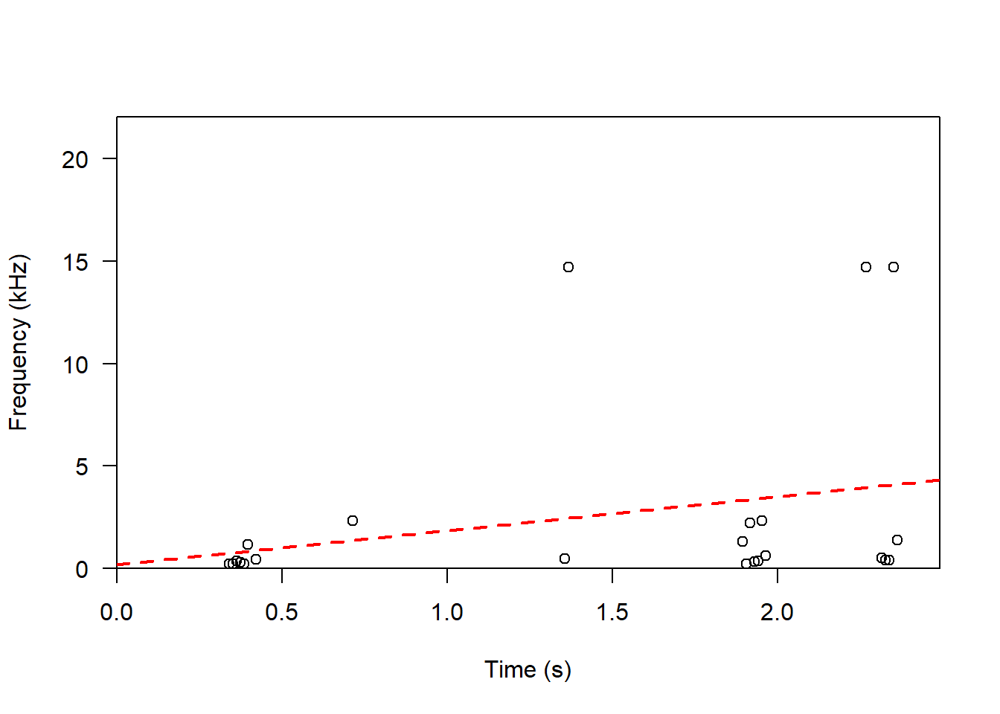
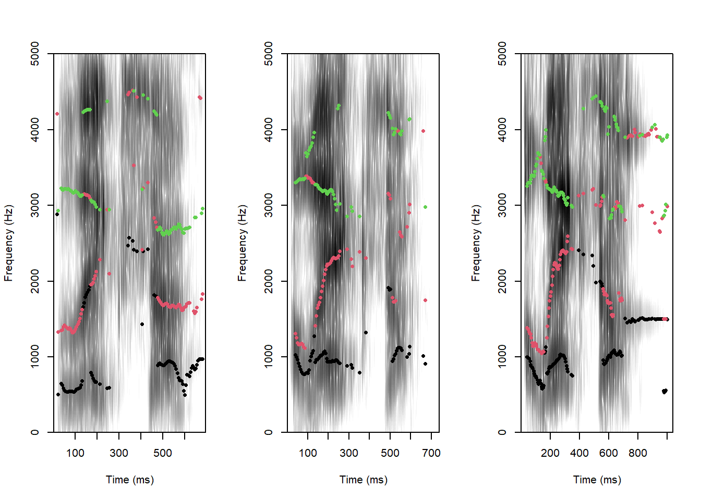
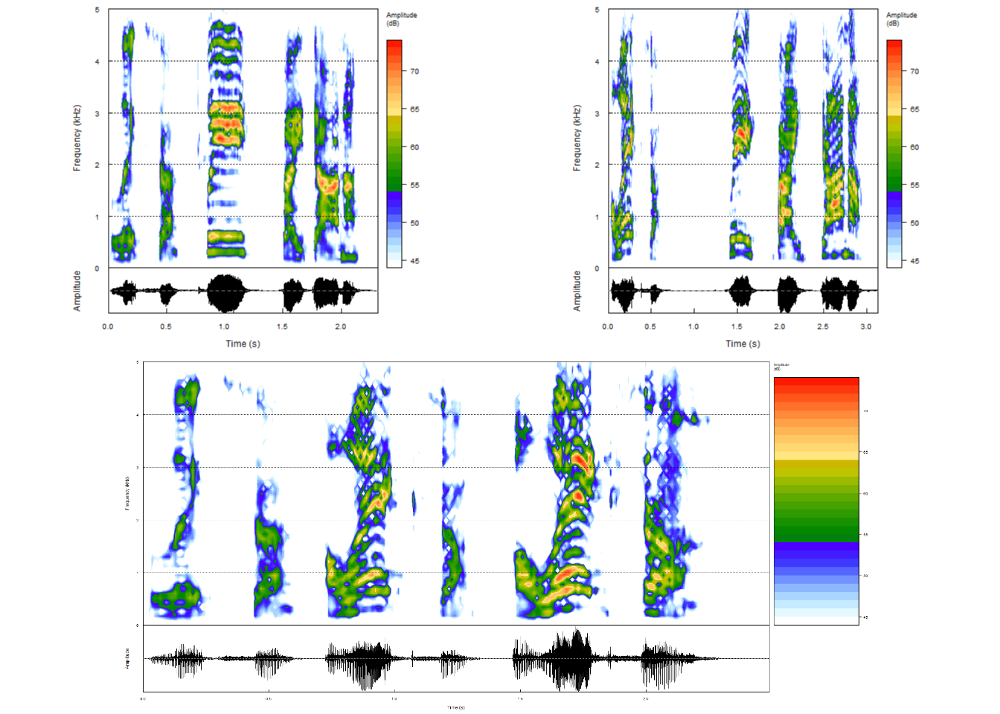
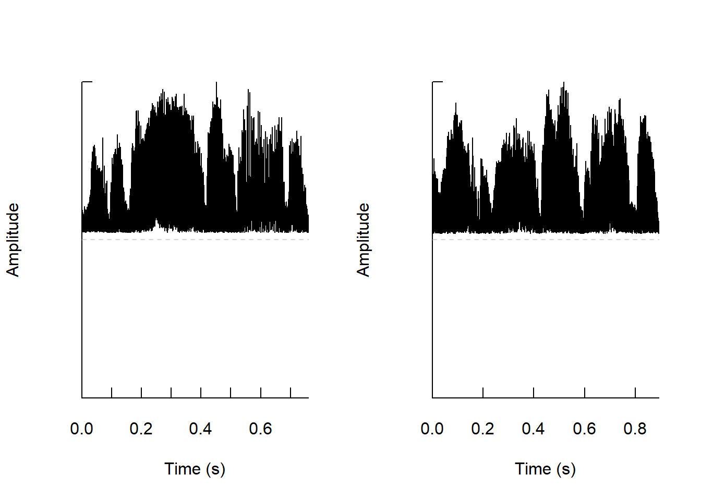

library(tuneR)
cmd1 <- readWave("alexa_cmd1.wav")
cmd2 <- readWave("alexa_cmd2.wav")voice Analytics in Action
Understanding User Frustration
Welcome to our practical tutorial on voice analytics with R, where we delve into the fascinating world of human-computer interaction. In this tutorial, we will analyze a compelling video featuring a female Scottish user attempting, albeit humorously, to issue a command to Amazon Alexa to play a song on Spotify. This viral video, though amusing, highlights a common frustration many users encounter when trying to communicate effectively with voice-controlled interfaces.
For our comprehensive analysis, we began by extracting the audio file from the previous video and converting it into the Waveform audio format. Our investigation is centered on two pivotal aspects of this interaction:
Speech Formation of the Wakeword “Alexa”
Vocal Changes During the Issuance of a Command (“Alexa, play something is cooking in my kitchen on Spotify by Dana”)
To facilitate our analysis, we meticulously edited the voice recordings, retaining only the segments containing the three consecutive wakewords and the two subsequent user commands. It is noteworthy that the third utterance of “Alexa” was not associated with a command but rather followed by a barrage of profanity and abusive language. Consequently, our subsequent sections will delve into the examination of this specific case. You can download the files for this example here.
Our analytical approach primarily leverages the renowned seewave package, which has emerged as the gold standard in R-sound analysis. This versatile package encompasses an impressive array of 130 functions designed for the analysis, manipulation, representation, editing, and synthesis of time-based audio waveforms. While seewave serves as our cornerstone, we also make reference to other valuable packages, such as tuneR, soundgen, and phonTools, for their specialized functionalities as needed.
Data Acquisition and Processing
Reading Sound Files
As previously mentioned, the primary focus of this tutorial centers around the utilization of the seewave package. While it is important to note that seewave lacks native capabilities for sound file reading, we adeptly overcome this limitation by harnessing functions from complementary packages. It is crucial to emphasize that different packages generate distinct classes of sound objects, each optimized for specific sound manipulation tasks. Consequently, when choosing an alternative package to load sound data, it becomes paramount to consider this inherent class compatibility.
In the context of seewave, its core functionality is primarily tailored to work seamlessly with sound objects of the Wave class. These Wave class sound objects are conventionally created using the tuneR package. Hence, when working with seewave, it is strongly recommended to employ tuneR for sound data loading.
The process of loading the two user commands from the interaction with Amazon Alexa and saving these sound files as new objects, cmd1 and cmd2, is accomplished as follows:
To begin, we employ the readWave() function from the tuneR package. This function efficiently loads or reads a sound file from a specified location. Here is the step-by-step procedure for loading and saving the user’s interaction commands:
Upon invoking these newly created objects, we obtain an informative output that reveals the underlying structure of the objects. This output not only underscores the seamless integration of the ‘wave’ class objects generated by the tuneR package but also provides key insights into their fundamental characteristics. These characteristics encompass:
Number of Samples: This indicates the total count of discrete data points in the audio waveform.
Duration (in seconds): The elapsed time in seconds, capturing the length of the audio.
Sampling Rate (in Hertz): Denoting the rate at which individual samples are taken per second.
Number of Channels: It signifies whether the audio is mono (single channel) or stereo (two channels).
Bit Rate: Representing the number of bits processed per unit of time.
Upon inspecting both objects, it becomes evident that they share identical sampling rates, channel numbers, and bit rates. However, a notable distinction emerges in their duration, with the second sound file being 820 milliseconds longer than the first. This divergence in duration warrants further investigation and could potentially yield valuable insights into the audio data.
cmd1
Wave Object
Number of Samples: 102051
Duration (seconds): 2.31
Samplingrate (Hertz): 44100
Channels (Mono/Stereo): Stereo
PCM (integer format): TRUE
Bit (8/16/24/32/64): 16 cmd2
Wave Object
Number of Samples: 137881
Duration (seconds): 3.13
Samplingrate (Hertz): 44100
Channels (Mono/Stereo): Stereo
PCM (integer format): TRUE
Bit (8/16/24/32/64): 16 Furthermore, the readWave() function offers additional parameters, notably from and to, which facilitate the selection of specific segments within the audio data for reading. By default, these parameters operate in samples units, defining the segment based on sample counts. However, the readWave() function also introduces the units argument, affording the flexibility to modify the units of from and to to seconds, minutes, or hours.
To illustrate, suppose we wish to load only the initial 0.5 seconds and the segment from 0.5 seconds to 2 seconds from the audio file and store them in separate objects, denoted as cmd1.s1 and cmd1.s2, respectively. Achieving this precision is straightforward, involving the configuration of the from, to, and units arguments as demonstrated below:
(cmd1.s1 <- readWave("alexa_cmd1.wav",from=0,to=0.5,units="seconds"))
Wave Object
Number of Samples: 22050
Duration (seconds): 0.5
Samplingrate (Hertz): 44100
Channels (Mono/Stereo): Stereo
PCM (integer format): TRUE
Bit (8/16/24/32/64): 16 (cmd1.s2 <- readWave("alexa_cmd1.wav",from=0.5,to=2,units="seconds"))
Wave Object
Number of Samples: 66150
Duration (seconds): 1.5
Samplingrate (Hertz): 44100
Channels (Mono/Stereo): Stereo
PCM (integer format): TRUE
Bit (8/16/24/32/64): 16 Playing sound file
Sound analysis is an iterative process, requiring frequent listening to parts of a soundwave. Although, R itself cannot play sound files the seewave’s listen( ) function allows us to call the default audio player of the user’s operating system. Thus, we could play the previously loaded cmd1 variable by using the listen() function:
library(seewave)
listen(cmd1)Much like the readWave() function, the listen() function offers analogous from and to arguments to precisely determine the sections of interest for auditory playback. Furthermore, it introduces an f argument, providing the capability to manipulate the sampling frequency rate. This adjustment allows for the alteration of the original sound’s pitch, facilitating the creation of both higher and lower-pitched auditory renditions. The code snippet below demonstrates this transformative process:
listen(cmd1, f=cmd1@samp.rate*1.1)listen(cmd1, f=cmd1@samp.rate/1.1)Editing sound Files
In certain applications, it becomes necessary to perform additional edits on voice files. These edits could include tasks such as (1) extracting specific segments of a soundwave for in-depth analysis, (2) eliminating a series of utterances from a soundwave, (3) trimming periods of silence at the beginning or end of a sound file, and (4) filtering out all unvoiced frames from a sound file.
Both the tuneR and seewave packages offer a suite of functions designed to address these various editing procedures:
extractWave( ): This function facilitates the extraction of desired segments from a soundwave. Users can specify the segments using thefromandtoarguments, which we discussed earlier. TheextractWave()function defaults to samples as the unit, but this can be adjusted using the ‘xunit’ argument.deletew( ): To remove specific portions from a soundwave, thedeletew()function is employed. By default, it operates in units of time.noSilence( ): This function is particularly useful for removing periods of silence from the beginning or end of a sound file. Users can fine-tune this process by specifying the desired silence level.zapsilw( ): To eliminate all unvoiced frames from a sound file, thezapsilw()function comes into play. Users can tailor this operation by setting the ‘threshold’ argument, which measures the amplitude threshold in percent distinguishing silence from signal. Additionally, thezapsilw()function offers the default feature of generating oscillograms for both the original sound file and the modified version post unvoiced frame removal, providing visual insight into the process.
These functions empower users to efficiently manipulate sound files, ensuring they are tailored to meet the specific requirements of their analyses. To illustrate their practical utility, let’s delve into some illustrative examples.
As an instance, consider the application of the extractWave() function to pinpoint the initial 700 milliseconds of the soundwave residing in cmd1.
#Extract first 700ms
cmd1.xtr <- extractWave(cmd1, from = 0, to = 0.7, xunit = "time") Here, the from and to arguments are employed to specify the time range of interest. In this case, we isolate the first 700 milliseconds, facilitating a focused analysis.
Alternatively, instead of extracting this segment, we can achieve its removal using the deletew() function:
#Delete first 700ms
cmd1.rem <- deletew(cmd1, from=0, to=0.7, output="Wave") Continuing with our exploration of sound manipulation, we can also replicate the first 700 milliseconds threefold with the repw() function:
#Repeat first 700ms three times
cmd1.rep3 <- repw(cmd1, f=cmd1@samp.rate, times=3, output="Wave")To refine the audio data further, we may opt to remove solely the unvoiced segments at the beginning and end using the noSilence() function:
#Remove only unvoiced start and ending
cmd1.cut <- noSilence(cmd1)
cmd1.cut
Wave Object
Number of Samples: 102051
Duration (seconds): 2.31
Samplingrate (Hertz): 44100
Channels (Mono/Stereo): Stereo
PCM (integer format): TRUE
Bit (8/16/24/32/64): 16 cmd1
Wave Object
Number of Samples: 102051
Duration (seconds): 2.31
Samplingrate (Hertz): 44100
Channels (Mono/Stereo): Stereo
PCM (integer format): TRUE
Bit (8/16/24/32/64): 16 In this particular instance, a comparison between the original sound cmd1 and the processed version cmd1.cut, where we have removed unvoiced segments from the beginning and end, reveals no discernible alteration. This lack of change stems from the fact that cmd1 initially did not contain any unvoiced segments at either its outset or conclusion.
Alternatively, we could use the zapsilw() function to cleanse all the unvoiced elements of cmd1:
#Remove all unvoiced frames of a soundwave
cmd1.nosil <- zapsilw(cmd1, threshold=1, output="Wave")
cmd1
Wave Object
Number of Samples: 102051
Duration (seconds): 2.31
Samplingrate (Hertz): 44100
Channels (Mono/Stereo): Stereo
PCM (integer format): TRUE
Bit (8/16/24/32/64): 16 cmd1.nosil
Wave Object
Number of Samples: 62425
Duration (seconds): 1.42
Samplingrate (Hertz): 44100
Channels (Mono/Stereo): Mono
PCM (integer format): TRUE
Bit (8/16/24/32/64): 16 
In this case, a close examination of Figure 1 reveals that the zapsilw() function has been remarkably successful in eliminating all the unvoiced areas within the soundwave. This process has resulted in a cleaner and more refined audio representation.
Furthermore, when we compare cmd1 to cmd1.nosil, it becomes evident that the duration of the latter is noticeably shorter, clocking in at almost 1 second less. This reduction in duration underscores the effective removal of unvoiced segments, affirming the utility of this process in streamlining the audio data while preserving its crucial vocal elements.
Writing sound files
Following sound file editing, it is often essential to preserve the revised version for future use. To accomplish this, the seewave package offers the convenient savewav( ) function, designed explicitly for storing R sound objects as .wav files. The process involves specifying the following parameters:
R Sound Object: As the first argument, designate the R sound object that you intend to save as a .wav file.
Sampling Frequency (
f): Next, specify the sampling frequency to be associated with the saved .wav file.Filename (
filename): Finally, provide the desired filename under which the edited sound object will be stored.
It’s worth noting that if the sampling frequency is not explicitly defined, the seewave package will automatically utilize the same sampling frequency as the edited R object, simplifying the saving process.
As an illustrative step, let’s go ahead and save the modified version of cmd1, where all unvoiced segments have been successfully removed, as a .wav file within our system:
savewav(cmd1.nosil, filename = "cmd1_noSilence.wav") Visualizing sound
Having covered the processes of reading, editing, and saving sound objects, we now embark on the journey of visualizing the essential attributes of a sound wave. Visualization entails the transformation of a sound wave into a graphical or statistical representation. The primary means of depicting a sound wave typically involve showcasing its (1) amplitude, (2) frequency, and (3) a blend of amplitude and frequency variations over time. Two common visualizations employed for this purpose are oscillograms, which capture amplitude, and spectrograms, which provide insights into frequency and the interplay between frequency and amplitude over time.
Oscillograms offer a visual representation of the instantaneous amplitude of a soundwave plotted against time. They are often referred to as waveforms, as they graphically depict the variations within the sound wave itself. Oscillograms serve as valuable tools for discerning potential changes in loudness over time within a soundwave. In R, you can create oscillograms using the oscillo() function from the seewave package. This function requires just one argument, the sound object. Moreover, oscillo() provides the flexibility to customize various visual aspects, such as the title (using the title argument), label color (via the collab argument), and wave color (by setting the ‘colwave’ argument). Additionally, you can specify the ‘from’ and ‘to’ arguments, similar to what we did during data processing, to generate an oscillogram for a specific time interval in seconds.
To gain insights from the oscillograms of the two Alexa commands, we aim to first visualize the entire soundwave and then zoom in to focus solely on the articulation of the wakeword.
To plot all four graphs within a single plotting region, we partition the plot into four distinct sections using the standard par and mfrow arguments in R. Furthermore, to exclusively display the wakeword, we make use of the from and to arguments within the oscillo() function.

Upon closer examination, as depicted in Figure 2, a few notable observations come to light at first glance:
Difference in Duration: It becomes apparent that the second command is slightly longer than the first. Remarkably, both commands share identical content, both stating “Alexa, play by Dana.” A deeper dive into the oscillograms reveals the underlying reason: in the second command, there are longer vocal breaks, representing the time gaps between each spoken word.
Emphasis on Individual Words: Notably, there are striking variations in the emphasis placed on individual words when issuing the two commands. For instance, in the lower panel of Figure 2, we can discern the pronounced differences in overall amplitudes. Particularly, the word “Alexa” in the second command exhibits significantly greater amplitude compared to its counterpart in the first command. This observation suggests that, without needing to listen to the voice files or comprehend the spoken content, we can already deduce that the second command tends to be louder overall than the first. Such a distinction may hint at potential heightened emotions such as anger, stress, or irritability on the part of the speaker.
These initial insights gleaned from the oscillograms provide valuable cues for further analysis and interpretation of the audio data.
Visualizing Fundamental Frequency
The graphical representation of the fundamental frequency over time, often referred to as an f0 contour or pitch track, holds significant value in acoustic analysis. This visualization unveils essential aspects, including the speaker’s fundamental frequency range, pitch variations throughout speech, distinctions between voiceless and voiced segments, as well as patterns of regular and irregular phonation.
In the context of the seewave package, the fund() function takes center stage. It skillfully estimates the fundamental frequency of an R object, employing a short-term cepstral transform, and automatically generates a visual plot of the fundamental frequency.
To demonstrate the practical application and insights derived from this analysis, we narrow our focus to the wakewords uttered by the speaker during their interaction with Amazon Alexa. It’s worth noting that although the user issued only two complete commands, the interaction involved three distinct wakewords. The third wakeword, notably, did not lead to the issuance of a command but instead featured the use of offensive language directed at Alexa.
To proceed with this exploration, we initiate the process by reading these distinct wakewords using the readWave() function:
(w1 <- readWave("alexa_wakeword_1.wav"))
Wave Object
Number of Samples: 30902
Duration (seconds): 0.7
Samplingrate (Hertz): 44100
Channels (Mono/Stereo): Stereo
PCM (integer format): TRUE
Bit (8/16/24/32/64): 16 (w2 <- readWave("alexa_wakeword_2.wav"))
Wave Object
Number of Samples: 32804
Duration (seconds): 0.74
Samplingrate (Hertz): 44100
Channels (Mono/Stereo): Stereo
PCM (integer format): TRUE
Bit (8/16/24/32/64): 16 (w3 <- readWave("alexa_wakeword_3.wav"))
Wave Object
Number of Samples: 46116
Duration (seconds): 1.05
Samplingrate (Hertz): 44100
Channels (Mono/Stereo): Stereo
PCM (integer format): TRUE
Bit (8/16/24/32/64): 16 Upon inspecting the output generated after calling each sound object, we readily observe differences in the durations of these wakewords. Specifically, they span 0.7 seconds, 0.74 seconds, and 1.05 seconds, respectively, highlighting the temporal distinctions among them.
With the three wakewords now successfully imported into R, we proceed to concatenate them into a single soundwave using seewave’s bind() function. We undertake this concatenation to facilitate a comprehensive visual evaluation of how the fundamental frequency evolves from one command to another.
(wake_all <- bind(w1,w2,w3))
Wave Object
Number of Samples: 109822
Duration (seconds): 2.49
Samplingrate (Hertz): 44100
Channels (Mono/Stereo): Stereo
PCM (integer format): TRUE
Bit (8/16/24/32/64): 16 listen(wake_all)This amalgamation sets the stage for the application of the fund() function to the concatenated sound object. Additionally, we leverage the ‘threshold’ argument within the fund() function, allowing us to eliminate smaller amplitude variations during signal detection, specified as a percentage. The results generated by the fund() function, represented as a matrix with two columns (x denoting time and y representing fundamental frequency), are stored in a new variable ff. Subsequently, to illustrate the evolution of the speaker’s fundamental frequency over time, we employ the time and frequency parameters in a linear model. This modeling unveils an upward trend, as portrayed in Figure 3, showcasing the progression from the first to the second and ultimately the third utterance of the wakeword “Alexa.”
ff <- fund(wake_all,threshold=1)
mod <- lm(ff[,2]~ff[,1])
abline(mod,col="red",lwd=2,lty=2)
To enhance our analysis further, we employ the formanttrack() function from the phonTools package. This function serves as a practical tool to track the distribution of acoustic energy across various frequency bands, typically in 1000Hz intervals. It’s worth noting that the phonTools package exclusively supports mono audio. Therefore, when working with stereo files, as in this scenario, only one of its channels must be specified as an argument. The channel of a wave object can be accessed using the @ operator along with the name of the desired channel (left or right). Additionally, since phonTools is not specifically designed to handle wave objects, the sampling frequency of the sound file must be manually set using the fs argument.
Figure 4 illustrates the first three frequency bands for each wakeword, respectively. These displays complement our earlier observations, illustrating the frequency escalation from the first to the third wakeword, along with an overall increase in variability over time. Given the strong correlation between heightened frequency levels and experiences of stress, anger, or frustration, these visualizations further underscore the extended duration during which the user encountered difficulties in their interaction with Amazon Alexa.
library(phonTools)
par(mfrow=c(1,3))
formanttrack(w1@left, fs=w1@samp.rate, formants=3, periodicity=.5)
formanttrack(w2@left, fs=w2@samp.rate, formants=3, periodicity=.5)
formanttrack(w3@left, fs=w3@samp.rate, formants=3, periodicity=.5)
Spectrograms
Spectrograms provide a rich, multi-dimensional portrayal of a soundwave, offering insights into its composition. In this representation, time unfolds along the x-axis, frequency extends along the y-axis, and a third dimension portrays amplitude levels (loudness) through varying color codes. The seewave package equips us with the spectro() function, which constructs a spectrographic visualization of a time wave. This versatile function demands only a time wave object, such as a sound object, as its input.Furthermore, the spectro() function offers several customization options to tailor the appearance of the spectrogram. For instance, the flim argument permits us to specify the minimum and maximum frequencies displayed. Additionally, osc introduces an oscillogram at the bottom of the spectrogram plot, while dBref allows us to define a reference value for the dB range of amplitude.
Figure 5 provides a more nuanced understanding, summarizing the significant distinctions between the initial two commands and the subsequent three consecutive wakewords spoken by the user. Across all spectrograms, three noteworthy points emerge:
Increase in Loudness: There is a noticeable escalation in power or loudness, depicted by the deepening reddish color gradients.
Prolonged Voice Breaks: A trend of longer voice breaks becomes evident from the first command to the second.
Frequency Stability: The first command exhibits relatively stable frequency, whereas the second command displays a moderate upward trend.
Collectively, these observations suggest that the heightened frequency, amplified loudness, and extended voice breaks likely mirror the speaker’s experiences of tension, anger, stress, and frustration during their interaction with Amazon Alexa.
spectro(cmd1, osc=TRUE, flim=c(0,6), dB = "max0", dBref = 2*10e-5)spectro(cmd2, osc=TRUE, flim=c(0,6), dB = "max0", dBref = 2*10e-5)spectro(wake_all, osc=TRUE, flim=c(0,6), dB = "max0", dBref = 2*10e-5) 
Acoustic Feature Extraction
In addition to the tasks we’ve explored thus far, the extraction of acoustic characteristics from sound files holds paramount importance in their analysis. These extracted features serve a variety of purposes, whether utilized as predictors or outcomes in statistical models. In this section, we shed light on crucial functions spread across different packages for extracting these vocal attributes, categorizing them into distinct domains: time, amplitude, frequency, and spectral.
Time Domain
The most fundamental measure in the time domain is the duration, typically expressed in seconds or milliseconds, which quantifies the temporal extent of a soundwave. The duration( ) within the seewave package offers a straightforward means of extracting this duration, providing the duration of the sound object in seconds. When we apply this function to the two commands, we ascertain that the first command has a duration of 2.31 seconds, while the second command spans 3.13 seconds.
duration(cmd1)[1] 2.314082duration(cmd2)[1] 3.126553Similarly, when we apply the same procedure to the wakewords, we discover that they have durations of 0.7 seconds, 0.74 seconds and 1.05 seconds, respectively.
duration(w1)[1] 0.7007256duration(w2)[1] 0.7438549duration(w3)[1] 1.045714The soundgen package includes the analyze() function, which provides the ability to extract several features across the time, amplitude, frequency, and spectral domain respectively. For example, using this function we can directly extract the number of voiced and unvoiced frames of a sound object. To do so, the results from the soundgen function should be stored in an R object. This object results in a list of two data.frames: a detailed data.frame (you can retrieve it by using $detailed) in which each row represents a Short-Time Fourier Transform frame and each column represents a vocal feature and a summarized data.frame (you can retrieve it by using $summary).
Thus, we can proceed to use the analyze() function to extract several vocal features from the first and second commands:
library(soundgen)
feat_cmd1 <- analyze("alexa_cmd1.wav", plot = F)
feat_cmd2 <- analyze("alexa_cmd2.wav", plot = F)Since the summary object represents a data.frame, we can access its columns using the $ operator followed by the column name. Hence, in order to check which proportion of frames are voiced, we can directly call the voiced column from the output extracted by the analyze() function:
#Returns the proportion of voiced samples
feat_cmd1$summary$voiced[1] 0.4395604feat_cmd2$summary$voiced[1] 0.3145161Revealing a a greater percentage of vocal breaks in the second (43.96%) compared to the first (31.45%) command.
Amplitude Domain
The amplitude of a soundwave dictates its power or loudness, with smaller amplitudes indicating softer sounds and larger amplitudes indicating louder ones. It essentially measures how far air particles deviate from their equilibrium position. To calculate the amplitude at various points in time, we can utilize the oscillo function from the seewave package, as demonstrated earlier, with its plot argument set to FALSE. This provides us with various statistics, such as the maximum and minimum amplitudes. In the code snippet below, we observe that the first command generally had a higher volume compared to the second, evident in the smaller minimum and larger maximum values.
min(oscillo(cmd1, plot = F))[1] -28068max(oscillo(cmd1, plot = F))[1] 19895min(oscillo(cmd2, plot = F))[1] -29746max(oscillo(cmd2, plot = F))[1] 20029Another method to estimate soundwave amplitude involves computing the root-mean-squared (RMS) of the amplitude envelope. This can be accomplished by combining the rms() function to calculate the RMS and the env() function to calculate the envelope. This approach provides us with insight into the sound file’s average loudness, revealing that, on average (after removing silent portions), the first command was louder than the second.
The Root Mean Square (RMS) is calculated as follows:
\[RMS = \sqrt{\frac{1}{N}\sum_{n=1}^{N} x_i^2}\] Here, \(x_i\) represents each amplitude envelope point and \(N\) represents the total number of points.
par(mfrow=c(1,2))
rms(env(zapsilw(cmd1, plot = F),f=cmd1@samp.rate))[1] 8771.827rms(env(zapsilw(cmd2, plot = F),f=cmd1@samp.rate))[1] 9386.833
Moreover, the analyze() function from the soundgen package yields a subjective unit of loudness measured in sone. This measure is stored in the ‘loudness’ column within the data.frame produced by analyze(). Using the mean() function in R on the loudness column computes the average loudness in sone, reaffirming our earlier observations that the second command was generally louder than the first.
feat_cmd1$summary$loudness_mean[1] 15.72149feat_cmd2$summary$loudness_mean[1] 17.66282Additionally, soundgen provides the getLoudness() function, offering a visual representation of loudness spectrum for soundwaves. It presents a grayscale visualization of the spectrum, with darker areas indicating higher sound pressure levels, and thus, higher loudness.
loudness1 <- getLoudness("alexa_cmd1.wav", plot = FALSE)
loudness2 <- getLoudness("alexa_cmd2.wav", plot = FALSE)Frequency domain
In this section we focus on the extraction of two main features in the frequency domain: (1) pitch of soundwave and (2) the extent of variability in frequency of the sound-wave. Both of them can be directly extracted from the summary of the results extracted from soundgen’s analyze( ) function: (1) pitch_mean and (2) pitch_sd. Consistent with our expectation, we find a strong increase from 219.76Hz to 245.76Hz in the average pitch. Thus, the extracted features confirm the “shrill” and aroused sound of the user’s voice after the repeated failure from the first to the second voice command.
feat_cmd1$summary$pitch_mean[1] 219.7559feat_cmd2$summary$pitch_mean[1] 245.7643feat_cmd1$summary$pitch_sd[1] 62.30056feat_cmd2$summary$pitch_sd[1] 32.96To get into a higher level of granularity, we can apply those same analysis only to the wakeword “Alexa”. In that way, we can see how these key differences are even more prominent: 173.68Hz on the first wakeword, 278.75Hz on the second and 296.46Hz on the third.
feat_w1 <- analyze("alexa_wakeword_1.wav", plot = F)
feat_w2 <- analyze("alexa_wakeword_2.wav", plot = F)
feat_w3 <- analyze("alexa_wakeword_3.wav", plot = F)
feat_w1$summary$pitch_mean[1] 173.677feat_w2$summary$pitch_mean[1] 278.7515feat_w3$summary$pitch_mean[1] 296.4579feat_w1$summary$pitch_sd[1] 14.07013feat_w2$summary$pitch_sd[1] 103.6117feat_w3$summary$pitch_sd[1] 110.608Spectral domain
Spectral features of a soundwave reflect perturbances of a soundwave. Measures of spectral qualities of a soundave generally assess the amount of perturbance or periodicity of sound. Two such measure of perturbances can be directly extracted using the Harmonics-to-Noise ratio (HNR) and level of entropy of the soundwave from the analyze( ) function of the soundgen package. Comparing the level of entropy and periodicity between the two commands confirms the moderately larger level of entropy and greater perturbances in the second compared to the first command respectively.
feat_cmd1$summary$entropy_mean[1] 0.1250395feat_cmd2$summary$entropy_mean[1] 0.1437937feat_cmd1$summary$HNR_mean[1] 5.90924feat_cmd2$summary$HNR_mean[1] 5.422622